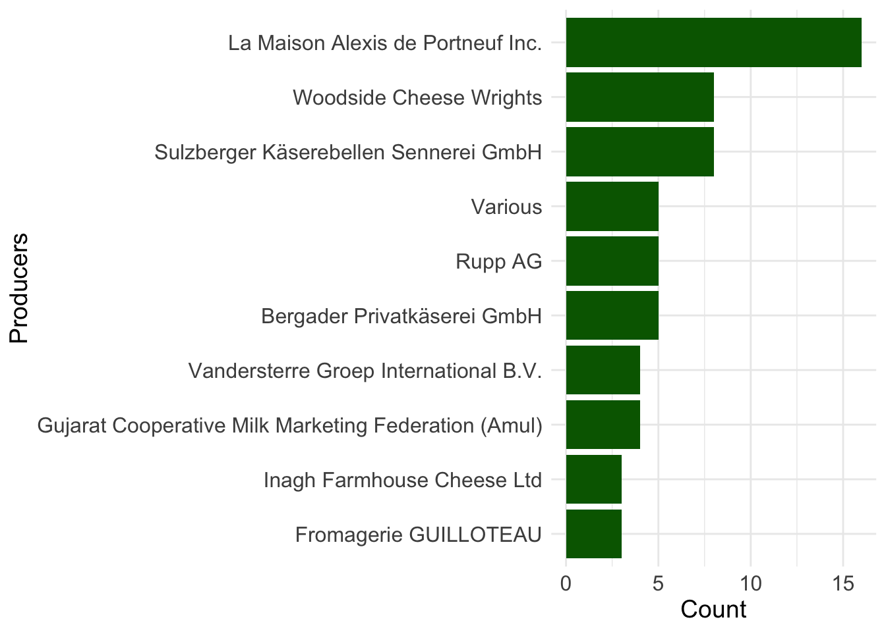
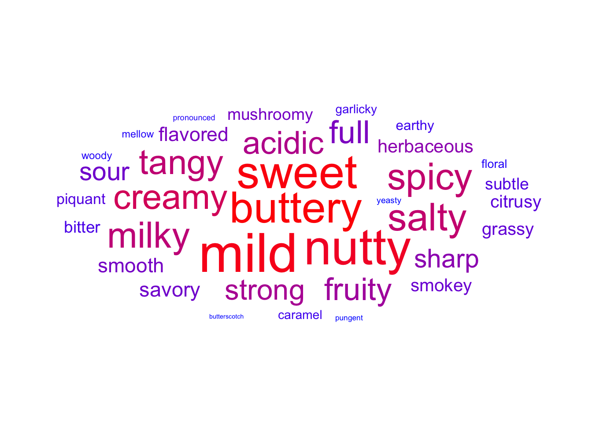
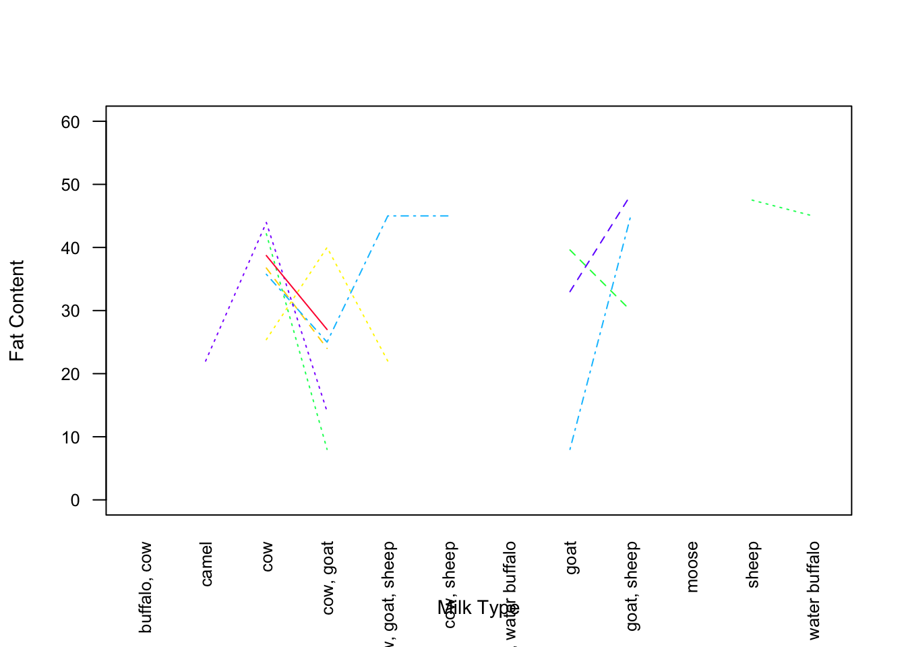
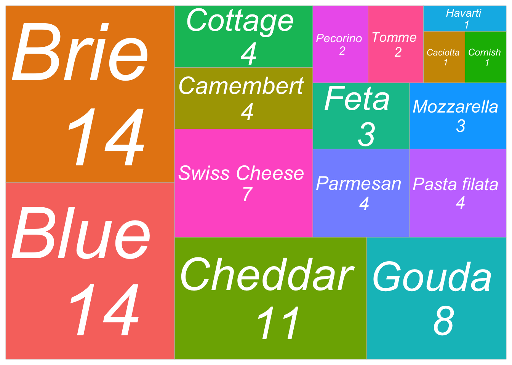
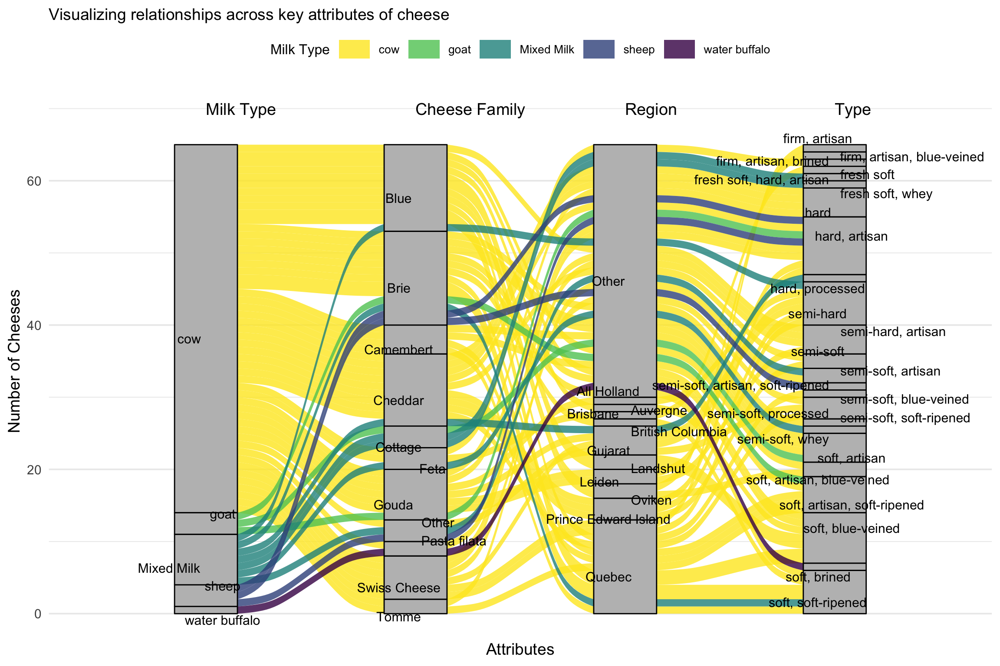

Dataset saved as 'cheeses_dataset.csv'3 Result

The bar chart reveals that cow’s milk overwhelmingly dominates cheese production, with a significantly higher count compared to other milk types. Goat and sheep milk are moderately popular, often appearing in pure form or mixed combinations like “goat, sheep” or “cow, goat.” Exotic milk types such as camel, moose, and water buffalo are used rarely, likely indicating niche or regional specialties. Overall, the chart emphasizes the global reliance on cow’s milk for cheese-making while also showcasing the diversity and occasional use of alternative milk sources.

This bar chart highlights the top 20 regions contributing to cheese production. The regions are ranked based on the number of cheese types produced, and their names have been abbreviated for better readability.
The chart demonstrates that Quebec leads significantly as the highest cheese-producing region, followed by Sulzberg and South Australia, which also exhibit considerable production counts. These regions seem to be prominent hubs for diverse cheese production, indicating established dairy industries and cheese-making traditions.
Regions such as Gujarat, Prince Edward Island, and Piedmont also show a notable number of cheese types produced, reflecting their regional expertise in specific cheese varieties. Other regions like Oviken, Inagh, Co Clare, and Colorado represent smaller yet significant contributions, emphasizing their specialization in cheese production despite their relatively smaller scale.
Interestingly, regions with particularly long names, such as Bregenzerwald, Kleinwalsertal, etc., and Macedonia, Thrace, etc., demonstrate that certain geographically broad regions may encompass multiple areas contributing to cheese diversity.
Overall, the chart provides an insightful overview of the global diversity in cheese production, emphasizing the dominance of certain regions while also showcasing the contributions of less prominent areas. This visualization helps identify key cheese-producing areas and the geographic spread of this culinary art.

This chart provides an insightful overview of the distribution of cheese rind types, showcasing the diverse methods used in cheese production. The “natural” rind type emerges as the most prevalent, indicating a strong preference for cheeses that rely on traditional maturation processes without significant external modifications. This dominance reflects the appeal of natural, artisanal flavors and textures among both producers and consumers.
“Washed” rinds, which rank second, highlight the popularity of cheeses treated with brine or other liquids during maturation. This technique imparts distinctive characteristics, often resulting in cheeses with robust and complex flavors. Similarly, “rindless” cheeses, which occupy the third spot, suggest a considerable demand for smoother, milder cheeses that cater to those seeking simplicity in taste and texture.
Further down the distribution, “bloomy” and “mold-ripened” rinds represent classic options like brie and camembert, renowned for their creamy interiors and soft, edible exteriors. These types underline the enduring appeal of soft-ripened cheeses in the global market. Meanwhile, specialized rind types such as “waxed,” “artificial,” “leaf-wrapped,” “ash-coated,” and “cloth-wrapped” reflect artisanal or innovative approaches to cheese-making. These niche techniques often cater to specific regional traditions or consumer preferences for unique aesthetics and flavors.
The least common rind type, “plastic,” points to limited demand, likely due to its less natural appearance and association with industrial production. Overall, this chart emphasizes the balance between tradition and innovation in the cheese industry, with natural and traditional rind types commanding the most significant attention while specialty rinds cater to niche markets seeking distinct and memorable cheese experiences.

The bar chart displays the distribution of cheese colors, offering a visual representation of the variety and diversity in cheese appearances. The most dominant cheese colors include “pale yellow” and “ivory,” which are widely popular and signify mild and creamy cheeses often favored by a broad audience. These colors are commonly associated with cheeses like gouda, cheddar, or brie, showcasing their widespread appeal.
The presence of “yellow” and “white” as other significant contributors emphasizes the preference for cheeses with visually clean and classic hues, reflecting simplicity and tradition in cheese production. Cheeses of these colors are typically staples in households and cooking.
Smaller yet notable categories, such as “straw” and “cream,” highlight the nuanced shades that differentiate specialty cheeses. The inclusion of “golden yellow” and “golden orange” signifies richer, more intense varieties that likely cater to niche markets or gourmet selections. On the other hand, colors like “green,” “blue,” and “brown,” though less common, reflect unique or artisanal cheeses, such as blue cheese or certain mold-ripened varieties, which are prized for their distinct flavors and visual appeal.
This chart not only captures the aesthetic range of cheeses but also underscores the diversity in cheese-making traditions and consumer preferences, catering to both mainstream tastes and specialized demands.

This bar chart showcases the top 10 cheese producers based on the number of cheese varieties they produce. La Maison Alexis de Portneuf Inc. leads the chart, reflecting its prominent role in the cheese industry with a broad and diverse range of offerings. This suggests a well-established reputation and possibly a global presence in the cheese market.
Other notable producers include Woodside Cheese Wrights and Sulzberger Käserebellen Sennerei GmbH, indicating their significant contribution to the cheese industry, likely through regional specializations or high-quality production standards. Companies such as Vandersterre Groep International B.V. and Gujarat Cooperative Milk Marketing Federation (Amul) showcase how cheese production spans both traditional Western producers and emerging markets like India, emphasizing the global nature of cheese consumption and production.
The diversity among producers reflects a blend of artisan creators, large-scale commercial producers, and cooperative models, highlighting the dynamic and inclusive nature of the cheese industry. This chart underscores the geographical and operational variety of producers, each contributing to the vast array of cheeses available to consumers.

The bar chart highlights France as the leading producer of cheese, significantly outpacing all other countries in the dataset. Renowned for its cheese-making tradition, France’s dominance reflects its global reputation for diverse and high-quality cheeses. Canada, the United States, and Italy follow as notable contributors, showcasing their strong cheese industries, which cater to both traditional and modern cheese varieties. Countries like Australia, Austria, and Germany also feature prominently, emphasizing their established roles in the global cheese market. Smaller producers such as Sweden, Ireland, Greece, and Denmark contribute niche and unique cheeses, enriching the global diversity of cheese production. However, the chart reveals inconsistencies in the dataset, with multiple entries for the United Kingdom (e.g., “England, United Kingdom” and “England, Great Britain, United Kingdom”), suggesting a need for data standardization. Overall, the chart underscores France’s unparalleled leadership while highlighting the global spread and diversity of cheese production.

The boxplot visualizes the distribution of fat content percentages across cheeses from the top cheese-producing countries. Notably, Australia exhibits a wide range of fat content, with higher variability compared to other countries. Austria and France have relatively consistent fat content distributions, showing tighter interquartile ranges. Countries like Greece, Ireland, and Italy have moderately narrow distributions, indicating that cheeses from these regions tend to cluster around specific fat content levels. Outliers are present across several countries, such as France and the United States, highlighting unique cheeses with exceptionally high or low fat content. Additionally, there are redundant entries for the United Kingdom (e.g., “England, United Kingdom” and “England, Great Britain, United Kingdom”), suggesting the need for data standardization. Overall, the chart highlights both diversity in fat content and regional preferences or production standards in cheese-making across these nations.

The treemap provides an engaging overview of cheese production diversity by country and family. Here are the key insights:
1. Prominent Cheese Producers:
• Countries like Canada, France, and Italy dominate the treemap, showcasing their significant contribution to cheese production. These nations are renowned for their rich cheese-making traditions and diverse cheese families.
2. Diverse Families in Specific Countries:
• Countries such as Italy and France show representation across multiple cheese families, reflecting their versatility and global influence in cheese-making.
• Canada also stands out for its contributions to a variety of cheese families, demonstrating its emerging presence in global cheese production.
3. Regional Specialization:
• Certain regions, such as Switzerland and Great Britain, are associated with fewer but distinctive cheese families, indicating a focus on specialty or artisanal cheese production.
4. Emerging Producers:
• Countries like India and Australia are also represented, signaling their growing role in the cheese industry. These regions may cater to unique local preferences or emerging global demand.
5. Cheese Family Highlights:
• Families like Cheddar, Camembert, and Brie appear in multiple countries, suggesting their universal appeal and widespread production.
• Specialized families such as Mozzarella are prominently tied to traditional cheese-producing regions like Italy.
6. Global Representation:
• The treemap highlights the diversity of cheese production, spanning traditional producers like France and Italy to countries with emerging cheese markets like India and Australia.
corrplot 0.95 loaded
The heatmap provides an overview of the correlation between different variables related to cheese. 1. Family and Producers Are Strongly Correlated: • A notable positive correlation (0.28–0.31) between family and producers indicates that certain cheese families are consistently associated with specific producers. This suggests specialization among cheese makers. 2. Texture and Fat Content Have a Relationship: • There’s a moderate positive correlation (0.38) between texture and fat content, reflecting how fat content contributes to the texture of cheese. Cheeses with higher fat content often have a creamier or softer texture. 3. Alt Spellings and Synonyms Show a Strong Correlation: • The highest correlation (0.78) is between alt_spellings and synonyms, indicating consistent data entries where multiple names or spellings are recorded together. 4. Region and Family Have a Weak Negative Correlation: • A slight negative correlation (-0.26) between region and family could reflect the diversity of cheese families across regions. Some regions may specialize in a few families, while others are more diverse. 5. Flavor, Aroma, and Fat Content: • Weak but positive correlations (0.15 for aroma-fat_content and 0.16 for flavor-fat_content) suggest a slight influence of fat content on cheese flavor and aroma. Richer cheeses may have a stronger flavor and aroma profile. 6. Low Correlation Between Calcium Content and Other Factors: • Calcium_content shows minimal correlation with other variables, indicating that calcium content may not significantly vary by cheese type, family, or other attributes. 7. No Clear Trends for Country: • The country variable shows weak correlations with most factors, suggesting that country of origin alone may not strongly influence cheese attributes.

This graph illustrates the interaction between different types of milk and cheese types in terms of fat content.
1. Variation Across Milk Types:
• Cheeses made from different milk sources (e.g., cow, goat, buffalo) display noticeable differences in fat content.
• For example, cow milk cheeses exhibit a wider range of fat content compared to camel milk cheeses, which appear more consistent.
2. Distinct Trends:
• Certain combinations, like goat and sheep milk, seem to cluster together with mid-range fat content.
• Milk types like buffalo show higher fat content on average, which could be due to the inherent richness of buffalo milk.
3. Unique Characteristics:
• Moose milk cheeses stand out with their placement, possibly indicating a unique fat composition that doesn’t overlap much with other types.
4. Complex Interactions:
• The overlapping dashed lines suggest that similar cheese types made from different milk sources may share comparable fat content. However, some cheese types deviate, emphasizing the role of cheese-making techniques and processing methods.
5. Opportunities for Exploration:
• The graph hints at potential opportunities to explore why certain milk types produce cheeses with distinct fat content patterns and how this affects texture and flavor.
The diagram provides a fascinating look at the variety of cheese families and how they connect to specific types of cheese. Here are the main takeaways: 1. Popular Cheese Families: • Some families, like Cheddar, Brie, and Blue, are widely known and have fewer but distinct types associated with them. These families seem to specialize in iconic cheese varieties that many people recognize. 2. Common Cheese Types: • Types like hard and semi-hard cheeses are the most frequently found across different families. This suggests that these textures are versatile and commonly produced, appealing to a wide range of consumers. 3. Specialized Families: • Certain families, such as Swiss Cheese or Pasta Filata, have unique characteristics and are associated with very specific types. These may represent niche or regional cheese varieties. 4. Rich Variety: • Families like Camembert and Mozzarella showcase a rich diversity by being connected to multiple cheese types. This reflects how these families adapt to different preferences and uses. 5. Visual Complexity: • The interconnected nature of the diagram highlights the complexity of the cheese world. It shows how certain families produce cheeses that overlap in texture and style, leading to a delightful variety.
